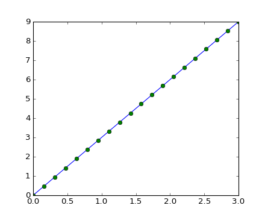
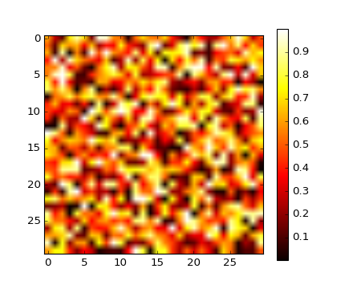
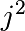
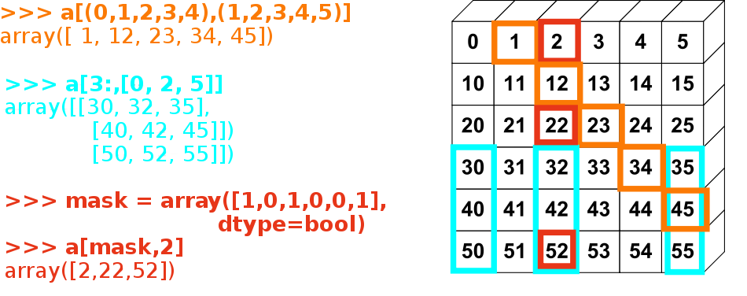

Numpy数组对象
Section contents
1.3.1. 什么是Numpy和Numpy数组?¶
1.3.1.1. Numpy数组¶
| Python 内置对象: |
|
|---|---|
| Numpy 提供的对象: |
|
>>> import numpy as np
>>> a = np.array([0, 1, 2, 3])
>>> a
array([0, 1, 2, 3])
小技巧
Numpy数组可以记录以下数据：
- 离散事件仿真的数据变量
- 设备测量的信号数据，如声波
- 图像中每一个像素点的灰度值或颜色
- 三维(多维)数据，如核磁共振扫描
- ...
为什么使用Numpy: Numpy数组是一个较为节省内存的数据容器，并且其数值计算操作十分高效。
In [1]: L = range(1000)
In [2]: %timeit [i**2 for i in L]
1000 loops, best of 3: 403 us per loop
In [3]: a = np.arange(1000)
In [4]: %timeit a**2
100000 loops, best of 3: 12.7 us per loop
1.3.1.2. Numpy参考文档¶
在线版: 请访问 http://docs.scipy.org/ 以获得帮助
交互式(如之前IPython说明提到的，直接在相关对象后加问号):
In [5]: np.array? String Form:<built-in function array> Docstring: array(object, dtype=None, copy=True, order=None, subok=False, ndmin=0, ...
查询某种结构或功能:
>>> np.lookfor('create array') Search results for 'create array' --------------------------------- numpy.array Create an array. numpy.memmap Create a memory-map to an array stored in a *binary* file on disk.
In [6]: np.con*? np.concatenate np.conj np.conjugate np.convolve
1.3.2. 创建Numpy数组¶
1.3.2.1. 手动建立数组¶
一维数组:
>>> a = np.array([0, 1, 2, 3]) >>> a array([0, 1, 2, 3]) >>> a.ndim 1 >>> a.shape (4,) >>> len(a) 4
二维及多维数组:
>>> b = np.array([[0, 1, 2], [3, 4, 5]]) # 2 x 3 array >>> b array([[0, 1, 2], [3, 4, 5]]) >>> b.ndim 2 >>> b.shape (2, 3) >>> len(b) # returns the size of the first dimension 2 >>> c = np.array([[[1], [2]], [[3], [4]]]) >>> c array([[[1], [2]], [[3], [4]]]) >>> c.shape (2, 2, 1)
练习：简单的数组
- 创建一个简单的二维数组。 首先，重复一下上面的例子，然后创建一个你喜欢的数组。
- 对你创建的数组使用len(), numpy.shape()函数，他们直接的关系是怎样的，再试着使用数组的ndim属性。
1.3.2.2. 用函数创建数组¶
小技巧
事实上，我们很少手动一个一个地创建数组...
等间距分布的数组:
>>> a = np.arange(10) # 0 .. n-1 (!) >>> a array([0, 1, 2, 3, 4, 5, 6, 7, 8, 9]) >>> b = np.arange(1, 9, 2) # start, end (exclusive), step >>> b array([1, 3, 5, 7])
指定数量(长度)的数组:
>>> c = np.linspace(0, 1, 6) # start, end, num-points >>> c array([ 0. , 0.2, 0.4, 0.6, 0.8, 1. ]) >>> d = np.linspace(0, 1, 5, endpoint=False) >>> d array([ 0. , 0.2, 0.4, 0.6, 0.8])
一些常用的数组:
>>> a = np.ones((3, 3)) # reminder: (3, 3) is a tuple >>> a array([[ 1., 1., 1.], [ 1., 1., 1.], [ 1., 1., 1.]]) >>> b = np.zeros((2, 2)) >>> b array([[ 0., 0.], [ 0., 0.]]) >>> c = np.eye(3) >>> c array([[ 1., 0., 0.], [ 0., 1., 0.], [ 0., 0., 1.]]) >>> d = np.diag(np.array([1, 2, 3, 4])) >>> d array([[1, 0, 0, 0], [0, 2, 0, 0], [0, 0, 3, 0], [0, 0, 0, 4]])
np.random: 随机数数组(梅森旋转算法：大概和随机数生成有关系，不用在意细节...):>>> a = np.random.rand(4) # uniform in [0, 1] >>> a array([ 0.95799151, 0.14222247, 0.08777354, 0.51887998]) >>> b = np.random.randn(4) # Gaussian >>> b array([ 0.37544699, -0.11425369, -0.47616538, 1.79664113]) >>> np.random.seed(1234) # Setting the random seed
练习：使用函数创建数组
- 尝试使用
arange,linspace,ones,zeros,eye和diag函数创建数组。 - 用随机数创建不同类型的数组。
- 在使用随机数之前设置随机数种子(seed)。
- 试试
np.empty函数，看看它有什么用。
1.3.3. 基本数据类型¶
你也许会发现，某些数组元素后面会跟着一个小数点 (比如 2. vs 2)。这是由于不同的数据类型所致:
>>> a = np.array([1, 2, 3])
>>> a.dtype
dtype('int64')
>>> b = np.array([1., 2., 3.])
>>> b.dtype
dtype('float64')
小技巧
不同的数据结构可以让我们更加高效地使用内存，但是通常来说我们用浮点数就够了。 在下面的例子中，Numpy会自动检测输入的数据类型。
你可以显式地指定数据类型:
>>> c = np.array([1, 2, 3], dtype=float)
>>> c.dtype
dtype('float64')
默认的数据类型是浮点数:
>>> a = np.ones((3, 3))
>>> a.dtype
dtype('float64')
当然我们也有其他的数据类型:
| 复数: | >>> d = np.array([1+2j, 3+4j, 5+6*1j])
>>> d.dtype
dtype('complex128')
|
|---|---|
| 布尔值: | >>> e = np.array([True, False, False, True])
>>> e.dtype
dtype('bool')
|
| 字符串: | >>> f = np.array(['Bonjour', 'Hello', 'Hallo',])
>>> f.dtype # <--- strings containing max. 7 letters
dtype('S7')
|
| 其他类型: |
|
1.3.4. 基本的数据可视化¶
既然我们知道如何构造数组了，那么现在我们要试着将数组里的数据可视化。
首先在终端中打开IPython:
$ ipython
当然你也可以使用IPython Notebook (我个人认为这个比较好用，还可以远程，只需要有一个浏览器):
$ ipython notebook
打开IPython后，我们应该打开交互绘图的功能:
>>> %matplotlib
如果你使用IPython Notebook的话，请以如下方式打开绘图功能:
>>> %matplotlib inline
这个 inline 属性可以让我们在notebook就能看到图像，而不会打开新的窗口。
Matplotlib 是一个2D的画图包，以如下方式导入：
>>> import matplotlib.pyplot as plt # the tidy way
现在就可以使用了 (注意一下，如果你没有打开交互式画图功能的话，需要显式地调用 show 命令):
>>> plt.plot(x, y) # line plot
>>> plt.show() # <-- shows the plot (not needed with interactive plots)
当然，如果你执行了 %matplotlib ，那么一切会变得更加简单:
>>> plot(x, y) # line plot
一维图像:
>>> x = np.linspace(0, 3, 20) >>> y = np.linspace(0, 9, 20) >>> plt.plot(x, y) # line plot [<matplotlib.lines.Line2D object at ...>] >>> plt.plot(x, y, 'o') # dot plot [<matplotlib.lines.Line2D object at ...>]
[source code, hires.png, pdf]
二维图像 (比如常见的图片什么的):
>>> image = np.random.rand(30, 30) >>> plt.imshow(image, cmap=plt.cm.hot) >>> plt.colorbar() <matplotlib.colorbar.Colorbar instance at ...>
[source code, hires.png, pdf]

{kind=link}
{kind=link}
参见
更多请见: matplotlib chapter
练习：简单的数据可视化
- 画出一些简单的数组: 一个关于时间的cos函数和二维矩阵。
- 尝试在一个二维矩阵上使用
gray颜色图(灰度图)。
1.3.5. Indexing and slicing¶
The items of an array can be accessed and assigned to the same way as other Python sequences (e.g. lists):
>>> a = np.arange(10)
>>> a
array([0, 1, 2, 3, 4, 5, 6, 7, 8, 9])
>>> a[0], a[2], a[-1]
(0, 2, 9)
警告
Indices begin at 0, like other Python sequences (and C/C++). In contrast, in Fortran or Matlab, indices begin at 1.
The usual python idiom for reversing a sequence is supported:
>>> a[::-1]
array([9, 8, 7, 6, 5, 4, 3, 2, 1, 0])
For multidimensional arrays, indexes are tuples of integers:
>>> a = np.diag(np.arange(3))
>>> a
array([[0, 0, 0],
[0, 1, 0],
[0, 0, 2]])
>>> a[1, 1]
1
>>> a[2, 1] = 10 # third line, second column
>>> a
array([[ 0, 0, 0],
[ 0, 1, 0],
[ 0, 10, 2]])
>>> a[1]
array([0, 1, 0])
注解
- In 2D, the first dimension corresponds to rows, the second to columns.
- for multidimensional
a,a[0]is interpreted by taking all elements in the unspecified dimensions.
Slicing: Arrays, like other Python sequences can also be sliced:
>>> a = np.arange(10)
>>> a
array([0, 1, 2, 3, 4, 5, 6, 7, 8, 9])
>>> a[2:9:3] # [start:end:step]
array([2, 5, 8])
Note that the last index is not included! :
>>> a[:4]
array([0, 1, 2, 3])
All three slice components are not required: by default, start is 0, end is the last and step is 1:
>>> a[1:3]
array([1, 2])
>>> a[::2]
array([0, 2, 4, 6, 8])
>>> a[3:]
array([3, 4, 5, 6, 7, 8, 9])
A small illustrated summary of Numpy indexing and slicing...

You can also combine assignment and slicing:
>>> a = np.arange(10)
>>> a[5:] = 10
>>> a
array([ 0, 1, 2, 3, 4, 10, 10, 10, 10, 10])
>>> b = np.arange(5)
>>> a[5:] = b[::-1]
>>> a
array([0, 1, 2, 3, 4, 4, 3, 2, 1, 0])
Exercise: Indexing and slicing
Try the different flavours of slicing, using
start,endandstep: starting from a linspace, try to obtain odd numbers counting backwards, and even numbers counting forwards.Reproduce the slices in the diagram above. You may use the following expression to create the array:
>>> np.arange(6) + np.arange(0, 51, 10)[:, np.newaxis] array([[ 0, 1, 2, 3, 4, 5], [10, 11, 12, 13, 14, 15], [20, 21, 22, 23, 24, 25], [30, 31, 32, 33, 34, 35], [40, 41, 42, 43, 44, 45], [50, 51, 52, 53, 54, 55]])
Exercise: Array creation
Create the following arrays (with correct data types):
[[1, 1, 1, 1],
[1, 1, 1, 1],
[1, 1, 1, 2],
[1, 6, 1, 1]]
[[0., 0., 0., 0., 0.],
[2., 0., 0., 0., 0.],
[0., 3., 0., 0., 0.],
[0., 0., 4., 0., 0.],
[0., 0., 0., 5., 0.],
[0., 0., 0., 0., 6.]]
Par on course: 3 statements for each
Hint: Individual array elements can be accessed similarly to a list,
e.g. a[1] or a[1, 2].
Hint: Examine the docstring for diag.
Exercise: Tiling for array creation
Skim through the documentation for np.tile, and use this function
to construct the array:
[[4, 3, 4, 3, 4, 3],
[2, 1, 2, 1, 2, 1],
[4, 3, 4, 3, 4, 3],
[2, 1, 2, 1, 2, 1]]
1.3.6. Copies and views¶
A slicing operation creates a view on the original array, which is
just a way of accessing array data. Thus the original array is not
copied in memory. You can use np.may_share_memory() to check if two arrays
share the same memory block. Note however, that this uses heuristics and may
give you false positives.
When modifying the view, the original array is modified as well:
>>> a = np.arange(10)
>>> a
array([0, 1, 2, 3, 4, 5, 6, 7, 8, 9])
>>> b = a[::2]
>>> b
array([0, 2, 4, 6, 8])
>>> np.may_share_memory(a, b)
True
>>> b[0] = 12
>>> b
array([12, 2, 4, 6, 8])
>>> a # (!)
array([12, 1, 2, 3, 4, 5, 6, 7, 8, 9])
>>> a = np.arange(10)
>>> c = a[::2].copy() # force a copy
>>> c[0] = 12
>>> a
array([0, 1, 2, 3, 4, 5, 6, 7, 8, 9])
>>> np.may_share_memory(a, c)
False
This behavior can be surprising at first sight... but it allows to save both memory and time.
Worked example: Prime number sieve

Compute prime numbers in 0–99, with a sieve
- Construct a shape (100,) boolean array
is_prime, filled with True in the beginning:
>>> is_prime = np.ones((100,), dtype=bool)
- Cross out 0 and 1 which are not primes:
>>> is_prime[:2] = 0
- For each integer
jstarting from 2, cross out its higher multiples:
>>> N_max = int(np.sqrt(len(is_prime)))
>>> for j in range(2, N_max):
... is_prime[2*j::j] = False
Skim through
help(np.nonzero), and print the prime numbersFollow-up:
- Move the above code into a script file named
prime_sieve.py - Run it to check it works
- Use the optimization suggested in the sieve of Eratosthenes:
- Skip
jwhich are already known to not be primes - The first number to cross out is 
- Move the above code into a script file named
1.3.7. Fancy indexing¶
小技巧
Numpy arrays can be indexed with slices, but also with boolean or integer arrays (masks). This method is called fancy indexing. It creates copies not views.
1.3.7.1. Using boolean masks¶
>>> np.random.seed(3)
>>> a = np.random.random_integers(0, 20, 15)
>>> a
array([10, 3, 8, 0, 19, 10, 11, 9, 10, 6, 0, 20, 12, 7, 14])
>>> (a % 3 == 0)
array([False, True, False, True, False, False, False, True, False,
True, True, False, True, False, False], dtype=bool)
>>> mask = (a % 3 == 0)
>>> extract_from_a = a[mask] # or, a[a%3==0]
>>> extract_from_a # extract a sub-array with the mask
array([ 3, 0, 9, 6, 0, 12])
Indexing with a mask can be very useful to assign a new value to a sub-array:
>>> a[a % 3 == 0] = -1
>>> a
array([10, -1, 8, -1, 19, 10, 11, -1, 10, -1, -1, 20, -1, 7, 14])
1.3.7.2. Indexing with an array of integers¶
>>> a = np.arange(0, 100, 10)
>>> a
array([ 0, 10, 20, 30, 40, 50, 60, 70, 80, 90])
Indexing can be done with an array of integers, where the same index is repeated several time:
>>> a[[2, 3, 2, 4, 2]] # note: [2, 3, 2, 4, 2] is a Python list
array([20, 30, 20, 40, 20])
New values can be assigned with this kind of indexing:
>>> a[[9, 7]] = -100
>>> a
array([ 0, 10, 20, 30, 40, 50, 60, -100, 80, -100])
小技巧
When a new array is created by indexing with an array of integers, the new array has the same shape than the array of integers:
>>> a = np.arange(10)
>>> idx = np.array([[3, 4], [9, 7]])
>>> idx.shape
(2, 2)
>>> a[idx]
array([[3, 4],
[9, 7]])
The image below illustrates various fancy indexing applications
{kind=link}
Exercise: Fancy indexing
- Again, reproduce the fancy indexing shown in the diagram above.
- Use fancy indexing on the left and array creation on the right to assign values into an array, for instance by setting parts of the array in the diagram above to zero.